Configuring Special Dates
In Master Calendar, a special date is a date that has particular significance or importance to an organization. A special date draws attention to a day, rather than to an event that occurs on the day. For example, if you are managing calendars for a university campus, special dates typically include traditional holidays, first and last day of classes, and so on. A special date can be displayed on a single calendar or on multiple calendars. Special dates are displayed at the top of calendar lists and above all events in a calendar date cell. At the time you are adding a special date, you can select a unique font color for it so that “stands out” even more from any calendar events. This topic guides you in creating new special dates and working with them.
Creating a New Special Date
 | Tip:Rather than creating a special date from scratch, if you are an EMS customer, then you can use the Data Sources function in Master Calendar to import your special dates from your EMS application into Master Calendar. See Also: Importing Data Sources. |
1. On the Admin menu, point to Events & Special Dates > Special Dates.
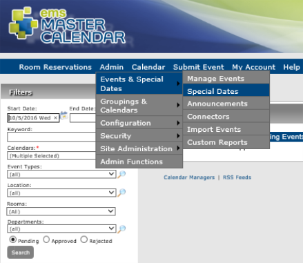
The Special Dates page opens.
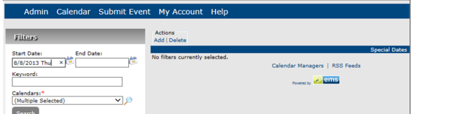
2. Under Actions, click Add. A blank General Info page opens. You use this page to add the information for the special date.
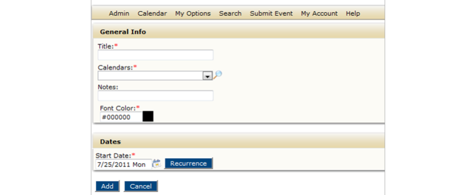
3. Add the information for the special date.
| General Info tab fields | |
| Field | Description |
| Title | The title or name of the special date. |
| Calendars | A list of all active calendars to which you have access as a Calendar Manager. Click the Lookup icon to open the Calendars dialog box and select the calendars to which you are adding the special date. |
| Notes | Any special information that you want associated with the special date. Notes are displayed next to the special date title on calendar lists and in calendar date cells. |
| Font Color | Select another color for the title, and if applicable, notes. |
| Dates | The date for the special date. The date can be a one-time date, or the date can be recurring. If the date is recurring, click Recurrence to open the Master Calendar Event Details dialog box and specify the information for the recurring date. Note: Make sure to click Apply Recurrence in this dialog box after you have completed the recurrence information. Master Calendar Event Details dialog box 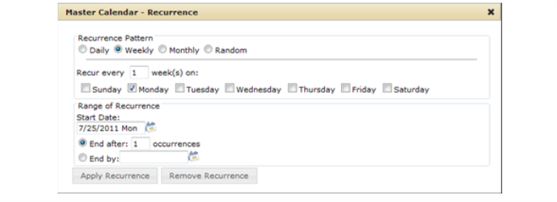 Once you define a recurring special date, each occurrence will be listed on the Special Dates page as shown below. 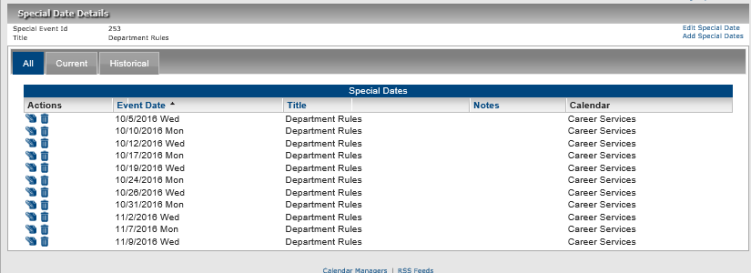 |
4. Click Add. The Special Dates Details page opens on the All tab. The page now has three tabs (All, Current, and Historical) and a Special Date Details section. The Special Date Details section shows the Event ID, title, and font color for the newly added special date.
• The All tab shows all occurrences of the special date that you just added. (The information that is displayed on this tab is the combined information from the Current tab and the Historical tab.)
• The Current tab shows the recurring dates for the special date that you just added going forward from the current day’s date.
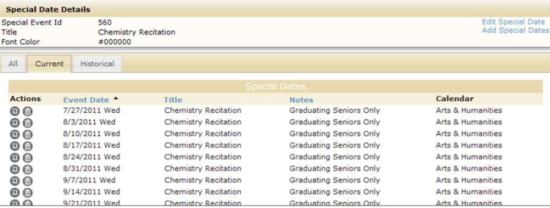
• The Historical tab shows the recurring dates for the special date that you just added that have already posted.
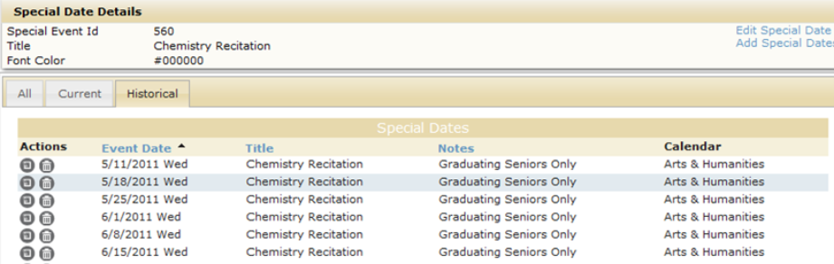
Working With Existing Special Dates
For a one-time special date or for a recurring special date, you can edit the title, calendars and color. For a single instance of a recurring special date, you can edit the title, notes, and dates.
1. To edit a special date, on the Admin menu, point to Events & Special Dates, and then click Special Dates. The Special Dates page opens.
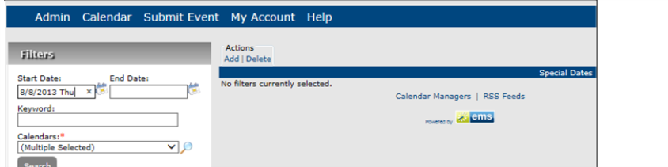
- Use the Filters area to search for the Special Date(s) you wish to edit. (See field definitions below)
| Special Dates, Search criteria | |
| Field | Description |
| Start Date/End Date | Search for special dates that occur on or after the indicated start date, on or before the indicated end date, or within the specified date range. Leave these fields blank to search for all special dates in Master Calendar, regardless of the date. |
| Keyword | The keyword can be displayed in the special date title or notes. |
| Calendars | A list of all active calendars to which you have access as Calendar Manager. By default, All calendars to which you have access are selected as the search criterion. To filter this list, click the Lookup icon to open the Calendars dialog box and clear the selections for the calendars that you do not want to include in the search. |
- Click Search. The page refreshes to list all special dates that meet your search criteria.
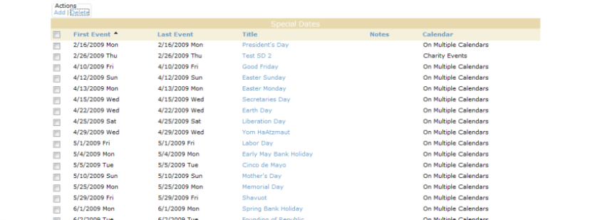
| Tip:You can delete a Special Date by selecting the checkbox next to it and clicking Actions > Delete. This removes it from the Special Dates page and you will no longer be able to apply this special date. |
- Click on the title of the special date that you wish to edit. The Special Dates page opens on the All tab. The page now has three tabs (All, Current, and Historical) and a Details section. By default, the All tab is the opened tab.
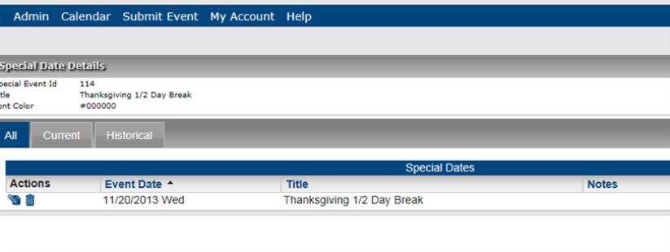
 | Note: For recurrent special dates, you can add more occurrences by clicking the Add Special Dates option. 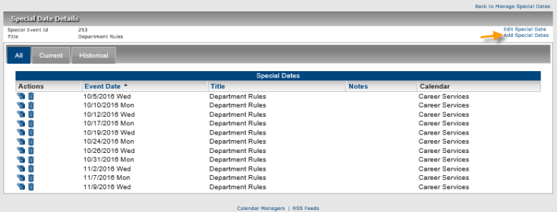 |
- Click the Edit icon next to the selected date to edit existing information. The General Info page opens.
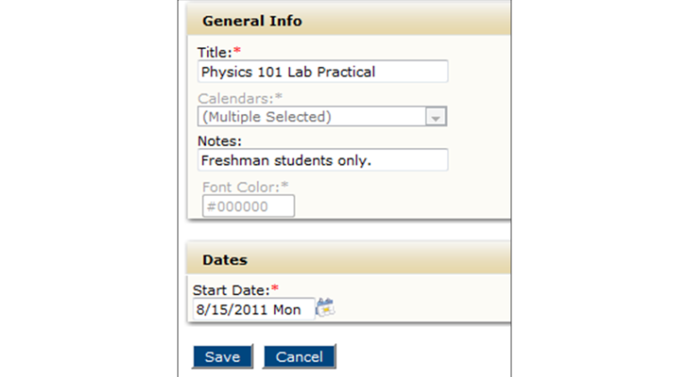
- Edit the information for the special date as needed.
| General Info page fields | |
| Field | Description |
| Title | The title or name of the special date. |
| Calendars | A list of all active calendars to which you have access as Calendar Manager. Click the Lookup icon to open the Calendars dialog box and select the calendars to which you are adding the special date. |
| Font Color | Select another color for the title, and if applicable, notes. |
| Notes | Any special information that you want associated with the special date. Notes can be displayed next to the special date title on calendar lists and in calendar date cells. |
| Start Date | The start date for the special date. |
- Click Save to save the edited special date in Master Calendar.
- To return to the Special Dates page, click Back to Manage Special Dates.
Page tags: article:topic